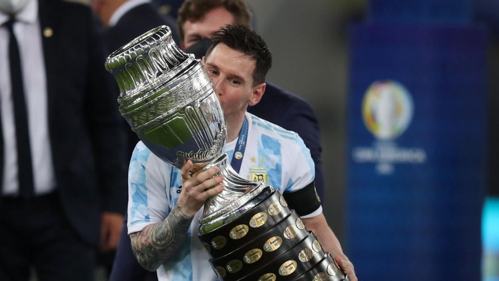

Lionel Messi
Leo Messi is the best player in the world. Technically perfect, he brings together unselfishness, pace, composure and goals to make him number one.

Neymar Jr
In its debut season, Neymar Jr. lead PSG to Ligue 1, French Cup, League Cup and Super Cup. The club regain the Ligue 1 title again in the following season, racking up 14 consecutive league wins, setting a French record. Neymar Jr. is named
Ligue 1 Player of the Year. In 2020, a historic moment: Neymar Jr leads Paris to the first Champions League final.

Cristiano Ronaldo
Ronaldo's brilliance comes from his ability to do everything an attacking player can possibly do on a soccer field. ... He's also six-one with incredible leaping ability, so much that Real Madrid set up a "Jump As High As Ronaldo" display
after he scored a goal on a nine-foot-four-inch leaping header.

Paulo Dayabala
Early life. Dybala was born in Laguna Larga, Córdoba, Argentina. His grandfather, Bolesław Dybała, was from the village of Kraśniów in Poland; he fled from his country of birth to Argentina during World War II. ... Dybala is the youngest
of three brothers and lost his father in 2008 to cancer.

Mesut Ozil
Mesut Özil is a German professional footballer who plays as an attacking midfielder for Süper Lig club Fenerbahçe. Nicknamed "The Assist King", Özil is known for his technical skills, creativity, agility, and finesse. He has also played
as a wide midfielder in his career.

Mauro Icardi
cardi was born in Rosario, Argentina and moved to Canary Islands when he was nine. He began his football career with Vecindario in Gran Canaria, and scored over 50 goals in their youth categories. In 2007, he was disputed over by Barcelona
and Real Madrid, after offers from Valencia, Sevilla, Espanyol, Deportivo La Coruña, Arsenal and Liverpool.

Angel Di Maria
Ángel Fabián Di María (born 14 February 1988) is an Argentine professional footballer who plays for Ligue 1 club Paris Saint-Germain and the Argentina national team. He can play as either a winger or attacking midfielder. Di María began
his career with Rosario Central, but came into prominence at Benfica after signing for the club in 2007, aged 19.

Kylian Mbappe
Ángel Fabián Di María (born 14 February 1988) is an Argentine professional footballer who plays for Ligue 1 club Paris Saint-Germain and the Argentina national team. He can play as either a winger or attacking midfielder. Di María began
his career with Rosario Central, but came into prominence at Benfica after signing for the club in 2007, aged 19.

MOhammad Salah
Salah started out playing for local youth teams. He names Ronaldo, Zinedine Zidane and Francesco Totti as his childhood idolsIn 2006, he joined the youth team of Al Mokawloon aged 14 after being spotted by a scout who had originally come
to watch another child play but was distracted by Salah.Salah frequently had to miss school to make the 3 hour journey to training.

Hary Kane
Kane started out playing for local youth teams. He names Ronaldo, Zinedine Zidane and Francesco Totti as his childhood idolsIn 2006, he joined the youth team of Al Mokawloon aged 14 after being spotted by a scout who had originally come
to watch another child play but was distracted by Salah.Salah frequently had to miss school to make the 3 hour journey to training.

Kavin De Bruyne
Kevin De Bruyne (born 28 June 1991) is a Belgian professional footballer who plays as a midfielder for Premier League club Manchester City, where he is vice-captain, and the Belgium national team. He is one of just three players to have
won the PFA Players' Player of the Year award back to back, and the only midfielder and Belgium player to have done so in English football history.

Philip Coutinho
Philip Coutinho (born 28 June 1991) is a Belgian professional footballer who plays as a midfielder for Premier League club Manchester City, where he is vice-captain, and the Belgium national team. He is one of just three players to have
won the PFA Players' Player of the Year award back to back, and the only midfielder and Belgium player to have done so in English football history.